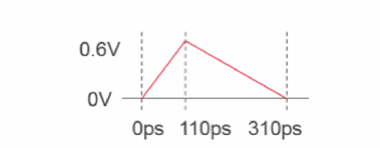
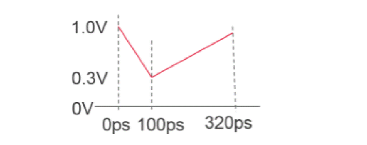

SI Glitch Reporting
You can use the report_noise command to generate glitch reports. The -format parameter can be used to control the fields to be displayed in a glitch report.
Given below is a sample report generated using the report_noise command.
-------------------------
Glitch Violations Summary
-------------------------
Number of DC tolerance violations (VH + VL) = 0
Number of Receiver Output Peak violations (VH + VL) = 5
Number of total problem noise nets = 3
---------------------------------------------------------------------------------
Peak(mV) Level TotalCap(fF) TotalArea Width(ps) Vdd(mV) Library VictimNet
1071.972 VH 232.84 134.35 250.659 1320 ecsmt xv5/A {vic3}
Receiver output peak:
Value ReceiverNet cell_type
1226.940 ( 396.000) xv5/A (NOR4_F4) [data]
Constituents:
Source Peak(mV) Offset(ps) Slew(ps) Xcap(fF) Vdd(mV) Edge Status Net
Cpl: 404.669 30.000 22.600 81.242 1320 F ACT attc4
Cpl: 323.200 25.000 19.800 62.494 1320 F ACT attc3
Cpl: 203.782 21.000 16.000 37.496 1320 F ACT attc2
Cpl: 140.000 18.000 14.000 24.998 1320 F ACT attc1
---------------------------------------------------------------------------------
The report sections and columns are explained below.
The top section Glitch Violations Summary shows a summary of each type of violation count.
- Peak value 1071.972 mV is the glitch at the receiver input pin (RIP).
- Level can be VH or VL, which shows the type of glitch at receiver input pin. VH is glitch under power rail and VL is glitch over ground rail.
- The pin name xv5/A below VictimNet is the receiver input pin having glitch.
- Receiver output peak (ROP) value 1226.940 is the glitch at the receiver output and 396.000 is the failure threshold for ROP. NOR4_F4 is the receiver library cell.
-
Constituents provide the details of attackers.
- Source column: Reports propagated noise as “Prp”.
-
Status
column: The Status column shows the abbreviated attacker status and filtered reason, as given below:
SY: SynchronousINF: Attacker with infinite timing windowPE: Filtered due to physical exclusionUF: Filtered by userSB: Filtered due to small bumpTA: Filtered because of timing window does not overlapLC: Filtered due to logical correlationACT: Attacker is Active.
- The following sample report shows the DC tolerance violations:
---------------------------
Glitch Violations Summary :
--------------------------
Number of DC tolerance violations (VH + VL) = 1
Number of Receiver Output Peak violations (VH + VL) = 0
Number of total problem noise nets = 1
----------------------------------------------------------------------
Peak(mV) Level TotalCap(fF) TotalArea Width(ps) Vdd(mV) Library VictimNet
530.496 VH 144.06 83.88 316.247 1080 cell_w u9/D {vic2}
Receiver Input Threshold:
Value (Threshold) ReceiverNet Receiver failure_type
530.496 (433.296) u9/D (DFF) [bbox]
Constituents:
Source Peak(mV) Offset(ps) Slew(ps) Xcap(fF) Vdd(mV) Edge Status Net
Cpl: 284.770 38.000 24.167 62.007 1080 F ACT u1/n8
Cpl: 245.673 59.000 76.333 68.138 1080 F ACT u3/n8
----------------------------------------------------------------------
In this report glitch at receiver input pin u9/D is more than the threshold.
-
The report_noise
-style extendedoption can be used to report additional information, such as, timing windows of attackers. A sample report is shown below:
tempus > report_noise -style extended
-------------------------------------
Glitch Violations Summary :
--------------------------
Number of DC tolerance violations (VH + VL) = 0
Number of Receiver Output Peak violations (VH + VL) = 5
Number of total problem noise nets = 3
----------------------------------------------------------------------
Peak(mV) Level TotalCap(fF) TotalArea Width(ps) Vdd(mV) Library VictimNet
1071.972 VH 232.84 134.35 250.659 1320 ecsmt xv5/A {vic3}
Receiver output peak:
Value ReceiverNet cell_type
1226.940 ( 396.000) xv5/A (NOR4_F4) [data]
Stage information:
Cell Pin
Driver : NOR4_F4 xv4/Y
Receiver : NOR4_F4 xv5/A
Constituents:
Source Peak(mV) Offset(ps) Slew(ps) Xcap(fF) Vdd(mV) Edge Status Net
Cpl: 404.669 30.000 22.600 81.242 1320 F ACT attc4
Cpl: 323.200 25.000 19.800 62.494 1320 F ACT attc3
Cpl: 203.782 21.000 16.000 37.496 1320 F ACT attc2
Cpl: 140.000 18.000 14.000 24.998 1320 F ACT attc1
Timing Windows: (NanoSecs)
MinTime MaxTime Edge Clock Net
0.180 0.184 R NULL vic3
0.023 0.023 F NULL attc4
0.021 0.021 F NULL attc3
0.019 0.019 F NULL attc2
0.018 0.018 F NULL attc1
----------------------------------------------------------------------
-
You can use the report_noise
-histogramparameter to print a violation summary and histogram of RIP/ROP. A detailed glitch report is not printed.
tempus > report_noise -histogram -txtfile rip_rop.hist
--------------------------
Glitch Violations Summary :
--------------------------
Number of DC tolerance violations (VH + VL) = 0
Number of Receiver Output Peak violations (VH + VL) = 5
Number of total problem noise nets = 3
Receiver Input Peak Histogram for View : default_emulate_view
Percentage of Receiver Vdd No. of Receivers
[ 0, 10 ) 0
[ 10, 20 ) 0
[ 20, 30 ) 0
[ 30, 40 ) 0
[ 40, 50 ) 1
[ 50, 60 ) 1
[ 60, 70 ) 2
[ 70, 80 ) 1
[ 80, 90 ) 1
[ 90, 100 ) 0
Receiver Output Peak Histogram for View : default_emulate_view
Percentage of Receiver Vdd No. of Receivers
[ 0, 10 ) 0
[ 10, 20 ) 1
[ 20, 30 ) 0
[ 30, 40 ) 1
[ 40, 50 ) 0
[ 50, 60 ) 0
[ 60, 70 ) 1
[ 70, 80 ) 0
[ 80, 90 ) 0
[ 90, 100 ) 3
------------------------------
Exceptions
The following command helps in specifying certain attackers as quiet for the victim net. This implies that the net mentioned in this command will not be considered as an attacker for a particular victim net, or all victim nets.
You can use the following parameter to specify a list of victim/attacker pairs to be made quiet:
set_quiet_attacker -victimstring
If the -attacker parameter is not used, then all the attackers are made silent for the specified victim.
You can use the following parameter to specify the victim/attacker pair to be made quiet:
set_quiet_attacker -attackerstring
If the -victim parameter is not used, then the given nets are made silent (as attackers) for all the victim nets in the design.
tempus > set_quiet_attacker -attacker attc4 -victim vic3
tempus > update_glitch
tempus > report_noise -nets vic3
-------------------------------------------------------------------------
Glitch Violations Summary:
--------------------------
Number of DC tolerance violations (VH + VL) = 0
Number of Receiver Output Peak violations (VH + VL) = 0
Number of total problem noise nets = 0
-------------------------------------------------------------------------
Peak(mV) Level TotalCap(fF) TotalArea Width(ps) Vdd(mV) Library VictimNet
667.128 VH 232.84 81.45 244.167 1320 ecsmt xv5/A {vic3}
Receiver output peak:
Value ReceiverNet cell_type
93.456 ( 396.000) xv5/A (NOR4_F4) [data]
Constituents:
Source Peak(mV) Offset(ps) Slew(ps) Xcap(fF) Vdd(mV) Edge Status Net
Cpl: 323.224 25.000 19.800 62.494 1320 F ACT attc3
Cpl: 203.808 21.000 16.000 37.496 1320 F ACT attc2
Cpl: 140.030 18.000 14.000 24.998 1320 F ACT attc1
Cpl: 0.000 0.000 22.600 81.242 1320 F UF attc4
-------------------------------------------------------------------------
In the above noise report, status of attacker attc4 is changed to UF (User Filtered).
-
set_annotated_glitch
-
The following parameter allows you to specify the port/pin name at which glitch needs to be annotated:
set_annotated_glitch -port
If a glitch is annotated at the driver output/input port, then it is combined with the coupling of the stage. If a glitch is annotated at the receiver input, then it overrides the glitch at receiver input with the annotated glitch. -
The following parameters allow you to specify the type of glitch waveform (vl or vh) to be annotated:
set_annotated_glitch -vl_glitch/-vh_glitch{waveform with time stamp and voltage value}
Thevh_glitchwaveform should also be specified starting from “0”. The software automatically inverts the waveform depending on receiver voltage.
The waveform is specified as PWL with multiple time and voltage points, such as,{time-1 voltage-1 time-2 voltage-2...}
Theset_annotated_glitch -vl_glitch {0 0 110e-12 0.6 310e-12 0}command defines glitch as shown below:
For VH, the wave should be defined starting from 0V, the software automatically inverts it when applying according to the victim voltage.
For victim voltage 1V, the set_annotated_glitch-vh_glitch {0 0 100e-12 0.6 320e-12 0}command defines glitch, as shown below:

-
The following parameter allows you to specify the port/pin name at which glitch needs to be annotated:
tempus > set_annotated_glitch -vl_glitch {0 0 100e-12 0.1 200e-12 0.4 300e-12 0.3 600e-12 0} -port u9/D
tempus > update_glitch
tempus > report_noise -nets n8
--------------------------------------------------------------------------------
Peak(mV) Level TotalCap(fF) TotalArea Width(ps) Vdd(mV) Library VictimNet
399.924 VL 144.11 110.00 550.104 1080 cell_w u9/D {n8}
Receiver Input Threshold:
Value (Threshold) ReceiverNet Receiver failure_type
399.924 (431.244) u9/D (DFF) [bbox]
Constituents:
Source Peak(mV) Offset(ps) Slew(ps) Xcap(fF) Vdd(mV) Edge Status Net
Prp: 399.924 -- -- -- -- -- u8/Y
********************************************************************************
The software overrides the glitch value showing up at RIP with the annotated glitch, as glitch is annotated at the receiver input.
set_noise_lib_pin
This command helps in mapping noise properties of a library cell pin to other library cell pins. The software copies the noise properties of a buffer type cell for a macro cell pin, for which a noise property has not been defined.
Specify the from_library/from_cell/from_pin.
Specify the to_library/to_cell/to_pin.
set_noise_lib_pin -from cell_w_1.6.lib/CLKBUF/A -to memory.lib/MEM_256x32/A
The software will map the noise properties from cdB linked to the specified library, even if there is a difference in voltage values. You must ensure that the voltage values are similar while mapping the properties.
Table -2 Impact of Timing Exceptions on Glitch Analysis.
Impact of Timing Constraints on Glitch Analysis in Infinite TW Mode
-
set_input_transition
This input transition command defined at the input ports, serves as a starting point to compute at slew at all nets. If its not defined, the software uses a fast slew of 5ps at input ports. -
set_driving_cell
This command is required to model holding resistance accurately, if there is coupling at the net connected to the input port. -
set_load
This command sets the load at the output load. This impacts glitch computation on the net connected at the output port.
Checking Noise Models
You can use the check_noise command before the update_glitch command to check consistency and completeness of noise models specified for a design. These checks help to ensure that the right set of models are available to perform SI analysis.
Library Requirement for Glitch Analysis
Tempus supports cdB, ECSM-N, and CCS-N library for glitch analysis. The key advantage of moving to ECSM-N/CCS-N is both use the same library for timing and glitch analysis. The cdB library is used only for glitch analysis and a separate timing library is required for timing analysis.
Return to top